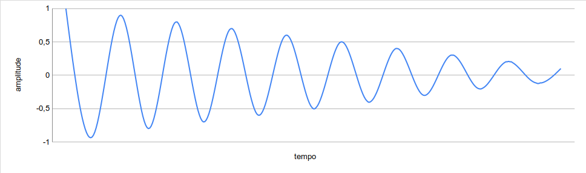

Sons são ondas de pressão que viajam pelo ar, ou algum outro meio, chegando a nossos ouvidos. Diferente das ondas do oceano, que se movem para cima e para baixo, ondas de pressão se movem para frente e para trás. Essas ondas então se movem para nossos ouvidos entrando e saindo, e percebemos isso como um som. Sintetização de som é a arte de criar sinais que, quando transformados em ondas sonoras por um alto-falante, pessoas acham interessante. Durante o percurso deste artigo iremos explorar dispositivos que criam e modificam sinais usados para sintetizar o som.
O primeiro desses dispositivos que iremos considerar é chamado de oscilador. Um oscilador gera um sinal consistente que se repete. Sinais de osciladores e outras fontes são usadas para controlar o movimento dos cones no nosso alto-falante, que fazem as ondas sonoras que chegam aos nossos ouvidos. Se você amarrar uma ponta de uma corda em uma maçaneta, se afastar um pouco e balançar a outra ponta da corda pra cima e pra baixo bem rápido, você vai estar fazendo mais ou menos a mesma coisa que um oscilador, tendo como diferença que você está balançando uma corda, enquanto um oscilador faz isso com um sinal de áudio.
Sinais de áudio são normalmente representados em um gráfico onde o eixo horizontal representa o tempo e o eixo vertical representa a pressão no sinal. Isso é chamado de representação do áudio no domínio do tempo. Gráficos no domínio do tempo são como instruções para alto-falantes sobre como mover-se para dentro e para fora. Quando o gráfico lê 1, o cone do alto falante é empurrado completamente para fora, e quando lê -1, o cone é puxado completamente para dentro. Esse movimento cria uma onda de pressão no ar que escutamos como um som, se um cone do alto-falante se mover para dentro e para fora de acordo com o gráfico acima, ele vai fazer o som de um tambor.
A quantidade de vezes que uma onda de som se move para dentro e para fora é chamado de frequência. Frequência é medida em ciclos por segundo. O tamanho de um ciclo único de uma forma de onda é a quantidade de tempo até que a forma de onda comece a se repetir. Pessoas normalmente escutam um aumento da frequência de uma onda sonora conforme ela aumenta de tom. Quando a frequência de um oscilador é dobrada, o tom sobe uma oitava. Por exemplo, um oscilador gerando um sinal que se repete a cada segundo 440 vezes vai ter o mesmo tom que um Lá médio em um piano. Um oscilador gerando um sinal que se repete a cada segundo 880 vezes vai ter o mesmo tom que um Lá uma oitava acima do Lá médio. Uma forma comum de dizer “Ciclos por segundo ” é usando a unidade de medida “Hertz”, abreviada como “Hz”.